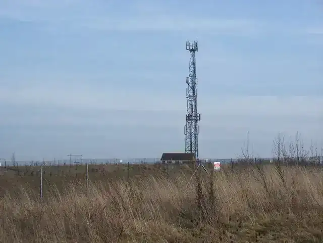
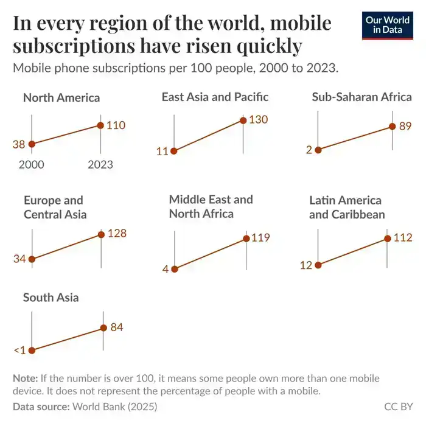

The software
Pegasus is spyware made by the Israeli firm NSO Group, sold to governments. It infects phones — historically through zero-click exploits in messaging apps — and gives access to messages, calls, location, camera and microphone. The 'zero-click' aspect means the target does nothing to trigger it.
Maps, diagrams and images




The exposure
In 2021 a consortium of news organisations, the Pegasus Project, analysed a leaked list of more than 50,000 phone numbers selected for possible targeting, and identified journalists, lawyers, activists and politicians. The list indicated selection rather than confirmed infection, which the consortium stated clearly.
NSO has said its product is for fighting crime and terrorism, and that it does not control how clients use it. The US placed the company on an export blacklist in 2021, and litigation continues.
Documented: the software, its capabilities and its customers.
Documented: the 2021 leak and the targeting of journalists and activists.
Documented: the US export restrictions.
Contested: which specific numbers were infected, as opposed to selected.
The label: documented.
Why it is in the archive
Because it is the clearest case of a surveillance capability that was sold commercially, and because the reporting was careful about what the list did and did not prove.
Open resources on this topic
- PapersOpen-access articles: DOAJ · PubMed Central · Internet Archive Scholar
- BooksPublic-domain and borrowable copies: Open Library · Project Gutenberg · Google Books · Internet Archive
Cite this page
Momin, S. (2026). Pegasus Zero-Click. The Larger World Archive. https://drsamonline.github.io/LARGE_GLOBE/pegasus-zero-click.htmlMomin, Sohil. “Pegasus Zero-Click.” The Larger World Archive, 2026, https://drsamonline.github.io/LARGE_GLOBE/pegasus-zero-click.html.Momin, Sohil. “Pegasus Zero-Click.” The Larger World Archive, 2026. https://drsamonline.github.io/LARGE_GLOBE/pegasus-zero-click.html.@misc{pegasus2026pegasus,
author = {Momin, Sohil},
title = {Pegasus Zero-Click},
year = {2026},
howpublished = {The Larger World Archive},
url = {https://drsamonline.github.io/LARGE_GLOBE/pegasus-zero-click.html},
note = {Last reviewed 20 November 2026}
}Last reviewed 20 November 2026 · Corrections policy · this page is not peer reviewed
Sources for this page
- Wikipedia, “Pegasus (spyware)” — the softwareen.wikipedia.org
- Wikipedia, “NSO Group” — the companyen.wikipedia.org
- Wikipedia, “Zero-click attack” — the techniqueen.wikipedia.org
- Wikipedia, “Surveillance capitalism” — the wider contexten.wikipedia.org